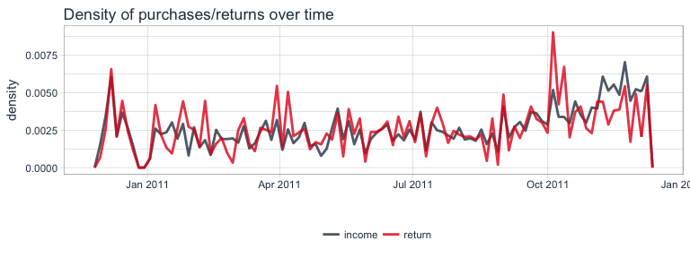
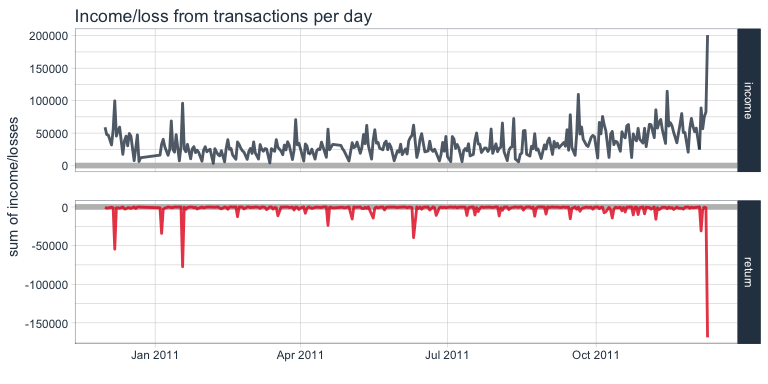
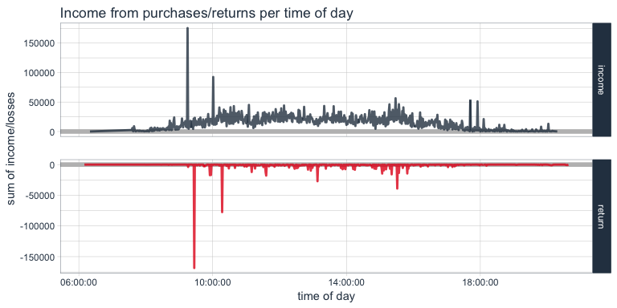
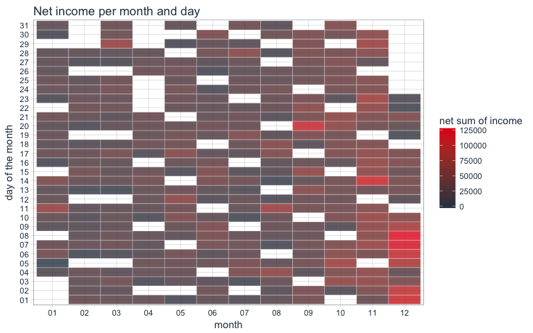
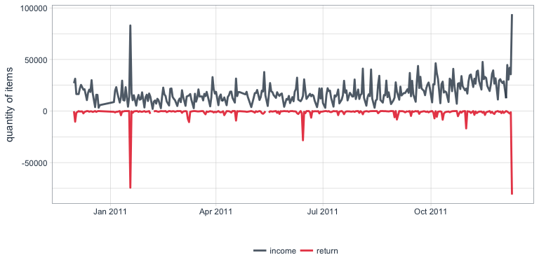
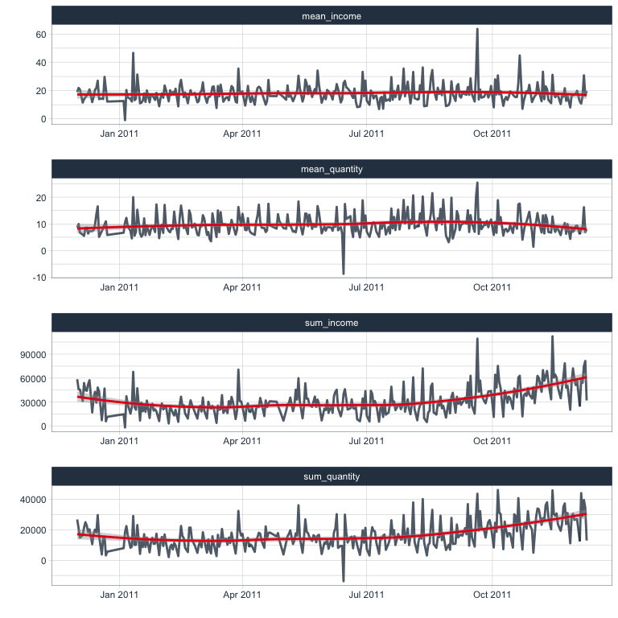
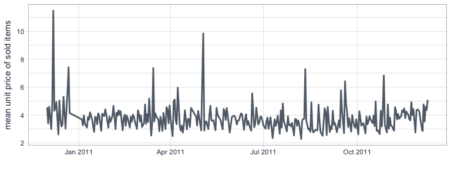

Data Science is a fairly broad term and encompasses a wide range of techniques from data visualization to statistics and machine learning models. But the techniques are only tools in a - sometimes very messy - toolbox. And while it is important to know and understand these tools, here, I want to go at it from a different angle: What is the task at hand that data science tools can help tackle, and what question do we want to have answered?
A straight-forward business problem is to estimate future sales and future income. Based on past experience, i.e. data from past sales, data science can help improve forecasts and generate models that describe the main factors of influence. This, in turn, can then be used to develop actions based on what we have learned, like where to increase advertisement, how much of which products to keep in stock, etc.
Data preparation
While it isn’t the most exciting aspect of data science, and therefore often neglected in favor of fancy modeling techniques, getting the data into the right format and extracting meaningful features, is arguably THE most essential part of any analysis!
Therefore, I have chosen to dedicate an entire article to this part and will discuss modeling and time series forecasting in separate blog posts.
Many of the formal concepts I am using when dealing with data in a tidy way come from Hadley Wickham & Garrett Grolemund’s “R for Data Science”.
The central package is tidyverse, which contains tidyr, dplyr, ggplot, etc. Other packages I am using are tidyquant for its nice ggplot theme, modelr, gridExtra and grid for additional plotting functionalities.
library(tidyverse)
library(tidyquant)
library(modelr)
library(gridExtra)
library(grid)
The data
I am again using a dataset from UC Irvine’s machine learning repository (converted to csv from xlsx).
From the dataset description:
This is a transnational data set which contains all the transactions occurring between 01/12/2010 and 09/12/2011 for a UK-based and registered non-store online retail.The company mainly sells unique all-occasion gifts. Many customers of the company are wholesalers.
Daqing Chen, Sai Liang Sain, and Kun Guo, Data mining for the online retail industry: A case study of RFM model-based customer segmentation using data mining, Journal of Database Marketing and Customer Strategy Management, Vol. 19, No. 3, pp. 197–208, 2012 (Published online before print: 27 August 2012. doi: 10.1057/dbm.2012.17).
Reading in the data
A fast way to read in data in csv format is to use readr’s read_csv() function. With a small dataset like this, it makes sense to specifically define what format each column should have (e.g. integers, character, etc.). In our case, this is particularly convenient for defining the date/time column to be read in correctly with col_datetime().
The original data contains the following features (description from UC Irvine’s machine learning repository):
- InvoiceNo: Invoice number uniquely assigned to each transaction. If this code starts with letter ‘c’, it indicates a cancellation.
- StockCode: Product (item) code uniquely assigned to each distinct product.
- Description: Product (item) name.
- Quantity: The quantities of each product (item) per transaction.
- InvoiceDate: Invoice Date and time, the day and time when each transaction was generated.
- UnitPrice: Unit price. Product price per unit in sterling.
- CustomerID: Customer number uniquely assigned to each customer.
- Country: Country name. The name of the country where each customer resides.
Because read_csv generates a tibble (a specific dataframe class) and is part of the tidyverse, we can directly create a few additional columns:
- day: Invoice date, the day when each transaction was generated.
- time: Invoice time, the time when each transaction was generated.
- month: The month when each transaction was generated.
- income: The amount of income generated from each transaction (Quantity * UnitPrice), negative in case of returns
- income_return: Description of whether a transaction generated income or loss (i.e. purchase or return)
retail <- read_csv("OnlineRetail.csv",
col_types = cols(
InvoiceNo = col_character(),
StockCode = col_character(),
Description = col_character(),
Quantity = col_integer(),
InvoiceDate = col_datetime("%m/%d/%Y %H:%M"),
UnitPrice = col_double(),
CustomerID = col_integer(),
Country = col_character()
)) %>%
mutate(day = parse_date(format(InvoiceDate, "%Y-%m-%d")),
day_of_week = wday(day, label = TRUE),
time = parse_time(format(InvoiceDate, "%H:%M")),
month = format(InvoiceDate, "%m"),
income = Quantity * UnitPrice,
income_return = ifelse(Quantity > 0, "income", "return"))
Exploratory Data Analysis (EDA)
In order to decide, which features to use in the final dataset for modeling, we want to get a feel for our data. And a good way to do this, is by creating different visualizations. It also helps with assessing your models later on, because to closer you are acquainted with the data’s properties, the better you’ll be able to pick up on things that might have gone wrong in your analysis (think of it as a kind of sanity-check for your data).
Transactions by country
The online retailer is UK-based, but its customers come from all over the world. However, the plots below tell us very quickly that the main customer base is from the UK, followed by Germany and France.
p1 <- retail %>%
filter(Country == "United Kingdom") %>%
ggplot(aes(x = Country, fill = income_return)) +
geom_bar(alpha = 0.8) +
scale_fill_manual(values = palette_light()) +
theme_tq() +
theme(axis.text.x = element_text(angle = 45, vjust = 1, hjust = 1)) +
guides(fill = FALSE) +
labs(x = "")
p2 <- retail %>%
filter(Country != "United Kingdom") %>%
ggplot(aes(x = Country, fill = income_return)) +
geom_bar(alpha = 0.8) +
scale_fill_manual(values = palette_light()) +
theme_tq() +
theme(legend.position = "right") +
theme(axis.text.x = element_text(angle = 45, vjust = 1, hjust = 1)) +
labs(x = "",
fill = "")
grid.arrange(p1, p2, widths = c(0.2, 0.8))

Transactions over time
To get an idea of the number of transactions over time, we can use a frequency polygon. Here, we can see that the number purchases slightly increased during the last two months of recording, while the number of returns remained relatively stable.
retail %>%
ggplot(aes(x = day, color = income_return)) +
facet_grid(income_return ~ ., scales = "free") +
geom_freqpoly(bins = 100, size = 1, alpha = 0.8) +
scale_color_manual(values = palette_light()) +
theme_tq() +
guides(color = FALSE) +
labs(title = "Number of purchases/returns over time",
x = "")

Because the number of returns is much smaller than the number of purchases, it is difficult to visualize and compare them in the same plot. While above, I split them into two facets with free scales, we can also compare the density of values. From this plot, we can more easily see the relationship between purchases and returns over time: except for the last month, the proportion of both remained relatively stable.
retail %>%
ggplot(aes(x = day, y = ..density.., color = income_return)) +
geom_freqpoly(size = 1, alpha = 0.8, bins = 100) +
scale_color_manual(values = palette_light()) +
theme_tq() +
labs(title = "Density of purchases/returns over time",
x = "",
color = "")

Income/loss from transactions
Let’s look at the income/loss from transactions over time. Here, we plot the sum of income and losses for each day. The income seems to increase slightly during the last month, while losses remained more stable. The only severe outlier is the last day.
retail %>%
group_by(day, income_return) %>%
summarise(sum_income = sum(income)) %>%
ggplot(aes(x = day, y = sum_income, color = income_return)) +
facet_grid(income_return ~ ., scales = "free") +
geom_ref_line(h = 0, colour = "grey") +
geom_line(size = 1, alpha = 0.8) +
scale_color_manual(values = palette_light()) +
theme_tq() +
guides(color = FALSE) +
labs(title = "Income/loss from transactions per day",
x = "",
y = "sum of income/losses",
color = "")

We can also look at the sum of income and losses according to time of day of the transaction. Not surprisingly, transactions happen mostly during business hours.
retail %>%
group_by(time, income_return) %>%
summarise(sum_income = sum(income)) %>%
ggplot(aes(x = time, y = sum_income, color = income_return)) +
facet_grid(income_return ~ ., scales = "free") +
geom_ref_line(h = 0, colour = "grey") +
geom_line(size = 1, alpha = 0.8) +
scale_color_manual(values = palette_light()) +
theme_tq() +
guides(color = FALSE) +
labs(title = "Income from purchases/returns per time of day",
x = "time of day",
y = "sum of income/losses",
color = "")

Here, we again see the two extreme outliers. Let’s look at them in the dataset. This purchase of 80995 paper craft birdies might have been a mistake, because we can see that the same customer who bought them at 09:15 cancelled the order only 15 minutes later and didn’t order a smaller number either.
retail %>%
filter(day == "2011-12-09") %>%
arrange(-Quantity) %>%
.[1:3, ]
## # A tibble: 3 x 14
## InvoiceNo StockCode Description Quantity
## <chr> <chr> <chr> <int>
## 1 581483 23843 PAPER CRAFT , LITTLE BIRDIE 80995
## 2 581476 16008 SMALL FOLDING SCISSOR(POINTED EDGE) 240
## 3 581476 22693 GROW A FLYTRAP OR SUNFLOWER IN TIN 192
## # ... with 10 more variables: InvoiceDate <dttm>, UnitPrice <dbl>,
## # CustomerID <int>, Country <chr>, day <date>, day_of_week <ord>,
## # time <time>, month <chr>, income <dbl>, income_return <chr>
retail %>%
filter(day == "2011-12-09") %>%
arrange(Quantity) %>%
.[1:3, ]
## # A tibble: 3 x 14
## InvoiceNo StockCode Description Quantity
## <chr> <chr> <chr> <int>
## 1 C581484 23843 PAPER CRAFT , LITTLE BIRDIE -80995
## 2 C581490 22178 VICTORIAN GLASS HANGING T-LIGHT -12
## 3 C581490 23144 ZINC T-LIGHT HOLDER STARS SMALL -11
## # ... with 10 more variables: InvoiceDate <dttm>, UnitPrice <dbl>,
## # CustomerID <int>, Country <chr>, day <date>, day_of_week <ord>,
## # time <time>, month <chr>, income <dbl>, income_return <chr>
retail %>%
filter(CustomerID == 16446)
## # A tibble: 4 x 14
## InvoiceNo StockCode Description Quantity
## <chr> <chr> <chr> <int>
## 1 553573 22980 PANTRY SCRUBBING BRUSH 1
## 2 553573 22982 PANTRY PASTRY BRUSH 1
## 3 581483 23843 PAPER CRAFT , LITTLE BIRDIE 80995
## 4 C581484 23843 PAPER CRAFT , LITTLE BIRDIE -80995
## # ... with 10 more variables: InvoiceDate <dttm>, UnitPrice <dbl>,
## # CustomerID <int>, Country <chr>, day <date>, day_of_week <ord>,
## # time <time>, month <chr>, income <dbl>, income_return <chr>
Transactions by day and time
The last plot told us that in general, transactions were done during business hours. We can look at this in even more detail by comparing the day and time of transactions in a 2D-bin-plot where the tile colors indicate transaction numbers.
retail %>%
ggplot(aes(x = time, y = day)) +
stat_bin2d(alpha = 0.8, bins = 25, color = "white") +
scale_fill_gradientn(colours = c(palette_light()[[1]], palette_light()[[2]])) +
theme_tq() +
theme(legend.position = "right") +
labs(title = "Purchases/returns per day and time")

Net income
The net income we can e.g. plot in a similar way by comparing month and day of the month of transactions with a tile plot:
retail %>%
mutate(day2 = format(InvoiceDate, "%d")) %>%
group_by(month, day2) %>%
summarise(sum_income = sum(income)) %>%
ggplot(aes(x = month, y = day2, fill = sum_income)) +
geom_tile(alpha = 0.8, color = "white") +
scale_fill_gradientn(colours = c(palette_light()[[1]], palette_light()[[2]])) +
theme_tq() +
theme(legend.position = "right") +
labs(title = "Net income per month and day",
y = "day of the month",
fill = "net sum of income")

Items
Also of interest are the items that are being purchases or returned. Here, we sum up the net quantities for each item.
retail %>%
group_by(StockCode, Description) %>%
summarise(sum = sum(Quantity)) %>%
arrange(-sum)
## Source: local data frame [5,749 x 3]
## Groups: StockCode [4,070]
##
## # A tibble: 5,749 x 3
## StockCode Description sum
## <chr> <chr> <int>
## 1 84077 WORLD WAR 2 GLIDERS ASSTD DESIGNS 53847
## 2 85099B JUMBO BAG RED RETROSPOT 47363
## 3 84879 ASSORTED COLOUR BIRD ORNAMENT 36381
## 4 22197 POPCORN HOLDER 36334
## 5 21212 PACK OF 72 RETROSPOT CAKE CASES 36039
## 6 85123A WHITE HANGING HEART T-LIGHT HOLDER 35025
## 7 23084 RABBIT NIGHT LIGHT 30680
## 8 22492 MINI PAINT SET VINTAGE 26437
## 9 22616 PACK OF 12 LONDON TISSUES 26315
## 10 21977 PACK OF 60 PINK PAISLEY CAKE CASES 24753
## # ... with 5,739 more rows
As we can see in the plots below, the majority of items is purchases only occasionally, while a few items are purchased a lot.
p1 <- retail %>%
group_by(StockCode, Description) %>%
summarise(sum = sum(Quantity)) %>%
ggplot(aes(x = sum)) +
geom_density(fill = palette_light()[[1]], alpha = 0.8) +
theme_tq()
p2 <- retail %>%
group_by(StockCode, Description) %>%
summarise(sum = sum(Quantity)) %>%
filter(sum > 1) %>%
ggplot(aes(x = sum)) +
geom_density(fill = palette_light()[[1]], alpha = 0.8) +
theme_tq()
p3 <- retail %>%
group_by(StockCode, Description) %>%
summarise(sum = sum(Quantity)) %>%
filter(sum > 10000) %>%
ggplot(aes(x = sum)) +
geom_density(fill = palette_light()[[1]], alpha = 0.8) +
theme_tq()
grid.arrange(p1, p2, p3, ncol = 3)

We can also calculate on how many different days, items have been purchased.
most_sold <- retail %>%
group_by(day, StockCode, Description) %>%
summarise(sum = sum(Quantity)) %>%
group_by(StockCode, Description) %>%
summarise(n = n()) %>%
arrange(-n)
head(most_sold)
## Source: local data frame [6 x 3]
## Groups: StockCode [6]
##
## # A tibble: 6 x 3
## StockCode Description n
## <chr> <chr> <int>
## 1 85123A WHITE HANGING HEART T-LIGHT HOLDER 304
## 2 85099B JUMBO BAG RED RETROSPOT 302
## 3 22423 REGENCY CAKESTAND 3 TIER 301
## 4 84879 ASSORTED COLOUR BIRD ORNAMENT 300
## 5 20725 LUNCH BAG RED RETROSPOT 299
## 6 21212 PACK OF 72 RETROSPOT CAKE CASES 299
The item that has been purchased most often in terms of days is the white hanging heart t-light holder. Let’s look at its distribution of sold/returned quantities per day:
retail %>%
filter(StockCode == "85123A") %>%
group_by(day, income_return) %>%
summarise(sum = sum(Quantity)) %>%
ggplot(aes(x = day, y = sum, color = income_return)) +
facet_wrap(~ income_return, ncol = 1, scales = "free") +
geom_line(size = 1, alpha = 0.5) +
scale_color_manual(values = palette_light()) +
theme_tq() +
labs(x = "",
y = "sum of quantities",
color = "",
title = "Transactions of WHITE HANGING HEART T-LIGHT HOLDER")

Preparing data for modeling by day
There are of course, infinitely more ways to visualize data but for now, I think we have enough of a feel for the data that we can start preparing a dataset for modeling. Because we have only limited information in that we only have data for one year, we might not have enough data to accurately forecast or model time-dependent trends. But we can try by creating a table of features per day.
Which customers are repeat customers?
If the customer ID has been recorded on more than one day (i.e., they have made multiple transactions during the year of recording), they are considered repeat customers. As we can see in the plot, the majority of customers are repeat customers.
rep_customer <- retail %>%
group_by(day, CustomerID) %>%
summarise(sum = sum(Quantity)) %>%
group_by(CustomerID) %>%
summarise(n = n()) %>%
mutate(repeat_customer = ifelse(n > 1, "repeat_cust", "one_time_cust"))
length(which(rep_customer$repeat_customer == "repeat_cust"))
## [1] 2992
rep_customer_day <- left_join(retail, rep_customer, by = "CustomerID") %>%
distinct(day, CustomerID, repeat_customer) %>%
group_by(day, repeat_customer) %>%
summarise(n = n()) %>%
spread(key = repeat_customer, value = n)
rep_customer %>%
group_by(repeat_customer) %>%
summarise(n = n()) %>%
mutate(prop = n / sum(n)) %>%
ggplot(aes(x = "", y = prop, fill = repeat_customer)) +
geom_bar(stat = "identity", alpha = 0.8) +
coord_polar("y", start = 0) +
scale_fill_manual(values = palette_light()) +
theme_tq() +
theme(legend.position = "right") +
labs(x = "",
y = "",
fill = "",
title = "Proportion of one-time & repeat customers")

Transactions, quantities and items per customer and day
I am calculating the following metrics per day and customer.
- n: number of different items purchased/returned per customer per day
- sum_it: net sum of items (quantity) purchased/returned per customer per day
- sum_in: mean net income per customer per day
From these, I can further calculate mean numbers per day:
- mean_in_cust: mean net income from all customers per day
- mean_quant_cust: mean net quantities of items from all customers per day
- mean_items_cust: mean number of items from all customers per day
customer_purch <- retail %>%
group_by(day, CustomerID) %>%
summarise(n = n(),
sum_it = sum(Quantity),
sum_in = sum(income)) %>%
group_by(day) %>%
summarise(mean_in_cust = mean(sum_in),
mean_quant_cust = mean(sum_it),
mean_items_cust = mean(n))
customer_purch %>%
gather(x, y, mean_in_cust:mean_items_cust) %>%
ggplot(aes(x = day, y = y)) +
facet_wrap(~ x, ncol = 1, scales = "free") +
geom_line(color = palette_light()[[1]], size = 1, alpha = 0.8) +
geom_smooth(color = palette_light()[[2]], method = 'loess') +
theme_tq() +
labs(x = "",
y = "")

Purchases/returns per day
This calculates the quantities of items that are purchased and returned per day:
income_return <- retail %>%
group_by(day, income_return) %>%
summarise(sum = sum(Quantity)) %>%
spread(key = income_return, value = sum)
income_return %>%
gather(x, y, income:return) %>%
ggplot(aes(x = day, y = y, color = x)) +
geom_line(size = 1, alpha = 0.8) +
scale_color_manual(values = palette_light()) +
theme_tq() +
labs(x = "",
y = "quantity of items",
color = "")

How many items are purchased/returned per country?
Because the majority of transactions came from UK customers, I am dividing customers into UK-based and other nationalities and calculate the net quantities of items purchases and returned by day and country.
country_purch <- retail %>%
mutate(Country2 = ifelse(Country == "United Kingdom", "uk", "other_country")) %>%
group_by(day, Country2) %>%
summarise(sum = sum(Quantity)) %>%
spread(key = Country2, value = sum) %>%
mutate(prop_other_country = other_country / sum(other_country + uk),
prop_uk = uk / sum(other_country + uk))
country_purch %>%
gather(x, y, prop_other_country:prop_uk) %>%
ggplot(aes(x = day, y = y)) +
geom_bar(aes(fill = x), stat = "identity", alpha = 0.6) +
scale_fill_manual(values = palette_light()) +
geom_line(data = country_purch, aes(x = day, y = prop_uk), size = 1) +
theme_tq() +
labs(x = "",
y = "proportion of quantity of items",
fill = "")

Here, we can now also see that not every day has a corresponding data point: there are regular (i.e. no Saturdays are recorded) and irregular patterns of missing data.
How many different items are purchased/returned per day?
I also want to know how many different items were purchased or returned. Here, we see a similar pattern where the number of different items per day increased during the last two months.
n_items <- retail %>%
group_by(day, StockCode) %>%
summarise(n = n()) %>%
group_by(day) %>%
summarise(n_items = n())
n_items %>%
ggplot(aes(x = day, y = n_items)) +
geom_line(color = palette_light()[[1]], size = 1, alpha = 0.8) +
geom_smooth(color = palette_light()[[2]], method = 'loess') +
theme_tq() +
labs(x = "",
y = "number of different items",
color = "")

Net income & quantities summaries
Finally, I am calculating the sum and mean of the net income and net quantities sold per day.
income <- retail %>%
group_by(day) %>%
summarise(sum_income = sum(income),
mean_income = mean(income),
sum_quantity = sum(Quantity),
mean_quantity = mean(Quantity))
income %>%
gather(x, y, sum_income:mean_quantity) %>%
ggplot(aes(x = day, y = y)) +
facet_wrap(~ x, ncol = 1, scales = "free") +
geom_line(color = palette_light()[[1]], size = 1, alpha = 0.8) +
geom_smooth(color = palette_light()[[2]], method = 'loess') +
theme_tq() +
labs(x = "",
y = "")

Income from purchases and returns
The same I am also calculating for purchases and returns separately.
purchases <- retail %>%
filter(income > 0) %>%
group_by(day) %>%
summarise(sum_income_purch = sum(income),
mean_income_purch = mean(income),
sum_quantity_purch = sum(Quantity),
mean_quantity_purch = mean(Quantity))
purchases %>%
gather(x, y, sum_income_purch:mean_quantity_purch) %>%
ggplot(aes(x = day, y = y)) +
facet_wrap(~ x, ncol = 1, scales = "free") +
geom_line(color = palette_light()[[1]], size = 1, alpha = 0.8) +
geom_smooth(color = palette_light()[[2]], method = 'loess') +
theme_tq() +
labs(x = "",
y = "")

returns <- retail %>%
filter(income < 0) %>%
group_by(day) %>%
summarise(sum_income_return = sum(income),
mean_income_return = mean(income),
sum_quantity_return = sum(Quantity),
mean_quantity_return = mean(Quantity))
returns %>%
gather(x, y, sum_income_return:mean_quantity_return) %>%
ggplot(aes(x = day, y = y)) +
facet_wrap(~ x, ncol = 1, scales = "free") +
geom_line(color = palette_light()[[1]], size = 1, alpha = 0.8) +
theme_tq() +
labs(x = "",
y = "")

Mean price per units sold per day
This is a bit more complicated than thought because some items are sold multiple times per time and unit prices of the same item change between transactions and days. Therefore, I am creating a temporary dataframe where I combine day & StockCode. This, I can then combine with a table of the number of transactions per day and item to find the price per item and day. Based on this, I calculate the mean unit price per item and the mean unit price of all items per day.
temp <- distinct(select(retail, day, StockCode, UnitPrice)) %>%
mutate(temp = paste(day, StockCode, sep = "_")) %>%
select(temp, UnitPrice)
mean_unit_price <- retail %>%
filter(income_return == "income") %>%
group_by(day, StockCode) %>%
summarise(n = n()) %>%
mutate(temp = paste(day, StockCode, sep = "_")) %>%
left_join(temp, by = "temp") %>%
group_by(day, StockCode) %>%
summarise(mean = mean(UnitPrice)) %>%
group_by(day) %>%
summarise(mean_unit_price = mean(mean))
mean_unit_price %>%
ggplot(aes(x = day, y = mean_unit_price)) +
geom_line(color = palette_light()[[1]], size = 1, alpha = 0.8) +
theme_tq() +
labs(x = "",
y = "mean unit price of sold items")

Purchases of most sold items
The 10 items that have been sold on the most days throughout the year of recording are also introduced as separate features.
most_sold_day <- retail %>%
filter(StockCode %in% most_sold$StockCode[1:10]) %>%
group_by(day, StockCode) %>%
summarise(sum = sum(Quantity)) %>%
spread(key = StockCode, value = sum)
retail %>%
filter(StockCode %in% most_sold$StockCode[1:10]) %>%
group_by(day, StockCode, Description) %>%
summarise(sum = sum(Quantity)) %>%
ggplot(aes(x = day, y = sum)) +
facet_wrap(~ StockCode, ncol = 1, scales = "free") +
geom_line(color = palette_light()[[1]], size = 1, alpha = 0.8) +
theme_tq() +
labs(x = "",
y = "net sum of quantites sold")

Combining data
Now, we can combine all the different per-day features into one dataframe. Now, I am also calculating the difference of the net sum of income to the previous day by using the lag() function. And I am creating a column for seasons.
Additional time-based information will be added in a later part when we actually do forecasting with the timekit package.
retail_p_day <- distinct(select(retail, day, day_of_week, month)) %>%
left_join(income, by = "day") %>%
left_join(mean_unit_price, by = "day") %>%
left_join(purchases, by = "day") %>%
left_join(returns, by = "day") %>%
left_join(customer_purch, by = "day") %>%
left_join(rep_customer_day, by = "day") %>%
left_join(income_return, by = "day") %>%
left_join(country_purch, by = "day") %>%
left_join(n_items, by = "day") %>%
left_join(most_sold_day, by = "day") %>%
mutate(diff_sum_income = sum_income - lag(sum_income),
season = ifelse(month %in% c("03", "04", "05"), "spring",
ifelse(month %in% c("06", "07", "08"), "summer",
ifelse(month %in% c("09", "10", "11"), "fall", "winter"))))
To keep track of the features, I am creating an additional dataframe/tibble containing the descriptions of every feature column.
meta <- tibble(colnames_retail_p_day = colnames(retail_p_day)) %>%
mutate(description = c(
"day in YYYY-MM-DD",
"weekday (Sun - Fri, there are no Sat in the dataset)",
"month (as month number)",
"sum of net income per day (all purchases & losses per day combined)",
"mean net income per day (all purchases & losses per day combined)",
"sum of net quantities sold/returned per day (all purchases & returns per day combined)",
"mean net quantities sold/returned per day (all purchases & returns per day combined)",
"mean price per unit sold (returns excluded)",
"sum of income from purchases per day (losses excluded)",
"mean income from purchases per day (losses excluded)",
"sum of quantities from purchases per day (losses excluded)",
"mean quantities from purchases per day (losses excluded)",
"sum of losses from returns per day (purchases excluded)",
"mean losses from returns per day (purchases excluded)",
"sum of quantities from returns per day (purchases excluded)",
"mean quantities from returns per day (purchases excluded)",
"mean net income from all customers per day",
"mean number of items from all customers per day",
"mean number of items from all customers per day",
"number of one-time customers per day",
"number of repeat customers per day",
"sum of items (quantities) purchased per day (returns excluded)",
"sum of items (quantities) returned per day (purchases excluded)",
"net sum of items (quantities) purchased per day from countries other than the UK",
"net sum of items (quantities) purchased per day from the UK",
"proportion of net sum of items (quantities) purchased per day from countries other than the UK",
"proportion of net sum of items (quantities) purchased per day from the UK",
"number of different items purchased/returned per day",
"net sum of quantities sold of item with StockCode 20725",
"net sum of quantities sold of item with StockCode 21212",
"net sum of quantities sold of item with StockCode 22423",
"net sum of quantities sold of item with StockCode 22457",
"net sum of quantities sold of item with StockCode 22666",
"net sum of quantities sold of item with StockCode 22960",
"net sum of quantities sold of item with StockCode 47566",
"net sum of quantities sold of item with StockCode 84879",
"net sum of quantities sold of item with StockCode 85099B",
"net sum of quantities sold of item with StockCode 85123A",
"difference in sum of net income (purchases - returns) to previous day",
"season"
))
Now, that we have all kinds of features per day, we can gather them in a final visualization to identify patterns and potential response variables suitable for modeling. I am also now adding points that are colored by day of the week so that we’ll be able to judge potential weekday biases.
retail_p_day %>%
# remove last day because it is so extreme
filter(day != max(retail_p_day$day)) %>%
gather(x, y, sum_income:diff_sum_income) %>%
ggplot(aes(x = day, y = y)) +
facet_wrap(~ x, scales = "free", ncol = 2) +
geom_line(alpha = 0.8, color = palette_light()[[1]]) +
geom_point(aes(color = day_of_week)) +
geom_smooth() +
scale_color_manual(values = palette_light()) +
theme_tq() +
labs(x = "",
y = "",
color = "day of the week")

From the plots we can see that there has been a slight increase in sales during the months of November and December. Unfortunately, we don’t have data from additional years to judge whether that has to do with Christmas sales or whether it is marking a general increase in sales that will continue into Januar and February.
And indeed, for many features we see lower sales on Sundays than on Monday through Friday (Saturdays have not been recorded).
Nevertheless, I will attempt a time-series forecast on this data. First, however, I will be developing some simple models to test for weekday biases and other statistics of the data. Stay tuned for my next post… :-)
sessionInfo()
## R version 3.4.0 (2017-04-21)
## Platform: x86_64-apple-darwin15.6.0 (64-bit)
## Running under: macOS Sierra 10.12.3
##
## Matrix products: default
## BLAS: /Library/Frameworks/R.framework/Versions/3.4/Resources/lib/libRblas.0.dylib
## LAPACK: /Library/Frameworks/R.framework/Versions/3.4/Resources/lib/libRlapack.dylib
##
## locale:
## [1] en_US.UTF-8/en_US.UTF-8/en_US.UTF-8/C/en_US.UTF-8/en_US.UTF-8
##
## attached base packages:
## [1] grid stats graphics grDevices utils datasets methods
## [8] base
##
## other attached packages:
## [1] gridExtra_2.2.1 modelr_0.1.0
## [3] tidyquant_0.5.1 quantmod_0.4-8
## [5] TTR_0.23-1 PerformanceAnalytics_1.4.3541
## [7] xts_0.9-7 zoo_1.8-0
## [9] lubridate_1.6.0 dplyr_0.5.0
## [11] purrr_0.2.2.2 readr_1.1.1
## [13] tidyr_0.6.3 tibble_1.3.1
## [15] ggplot2_2.2.1 tidyverse_1.1.1
##
## loaded via a namespace (and not attached):
## [1] reshape2_1.4.2 haven_1.0.0 lattice_0.20-35 colorspace_1.3-2
## [5] htmltools_0.3.6 yaml_2.1.14 rlang_0.1.1 foreign_0.8-68
## [9] DBI_0.6-1 readxl_1.0.0 plyr_1.8.4 stringr_1.2.0
## [13] Quandl_2.8.0 munsell_0.4.3 gtable_0.2.0 cellranger_1.1.0
## [17] rvest_0.3.2 psych_1.7.5 evaluate_0.10 labeling_0.3
## [21] knitr_1.16 forcats_0.2.0 parallel_3.4.0 broom_0.4.2
## [25] Rcpp_0.12.11 scales_0.4.1 backports_1.1.0 jsonlite_1.4
## [29] mnormt_1.5-5 hms_0.3 digest_0.6.12 stringi_1.1.5
## [33] rprojroot_1.2 tools_3.4.0 magrittr_1.5 lazyeval_0.2.0
## [37] xml2_1.1.1 assertthat_0.2.0 rmarkdown_1.5 httr_1.2.1
## [41] R6_2.2.1 nlme_3.1-131 compiler_3.4.0